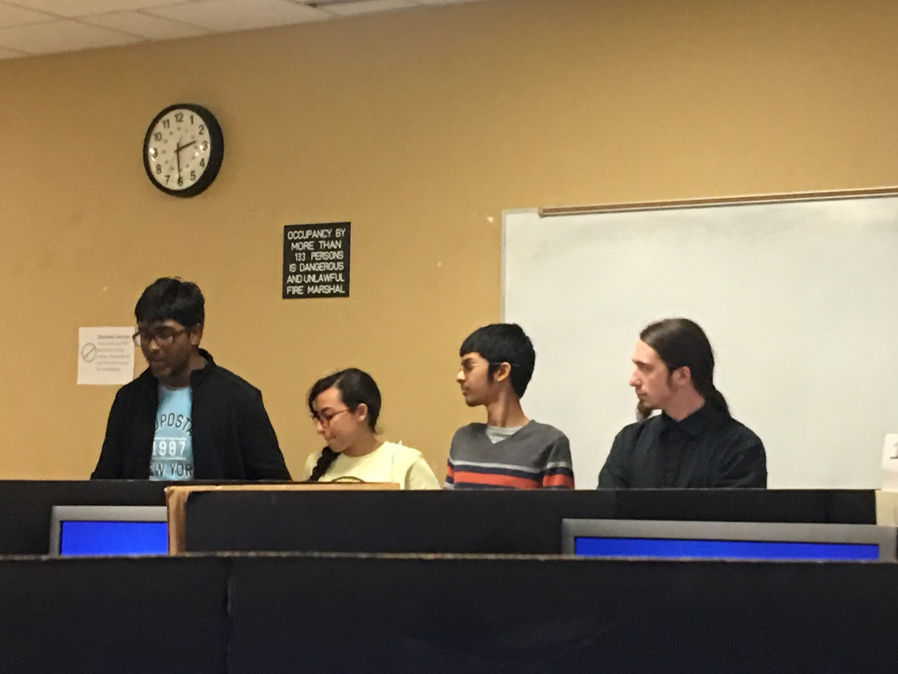

TSA Chapter
Our Chapter
Seminole High’s TSA chapter is in its second year of development with Kashyap Sreeram founding it in his freshman year and running as current President. Karthik Sreeram is the current Vice-President with club advisor Kevin Strileckis, secretary Tanay Poddar, and Treasurer Zarif Caesar. They were elected by an application and request to make the club a better place. This year we have __ members and are competing in nearly every competition for the TSA State Conference.
We strive to grow together as a team and individually.
We will learn more about technology and the ever advancing technological workplace and future.
We seek to further advance our technological and team working skills.
Officers
Club Advisor

Kevin Strileckis
Mr. Strileckis currently teaches all the computer courses at Seminole high school including AP Computer Principles and AP Computer Science A. He graduated from the University of Central Florida when he was (age). He acts as the club moderator and oversees the club’s duties on a day to day basis. He helps students formulate their project ideas when in need and demonstrates and displays the proper skills needed for a club advisor.
President
Kashyap Sreeram
Kashyap founded the first chapter of Technology Student Association in the county on December 2017.
Vice President
Karthik Sreeram
Along with being Vice-President of Technology Student Association, Karthik has a busy schedule as a senior in the rigorous IB program. Karthik is also heavily involved in Model United Nations and Mu Alpha Theta. Karthik is fluent in the programming languages of Python, Javascript, and R. After-school, you can find Karthik at his internship with data analytics to pursue his passion in STEM. The school county has recognized Karthik as the only student who won the Informational Technology Student Award. In 2017, Karthik was in the top 3 of the Florida Tech Bowl competition.
Secretary
Tanay Poddar
Tanay, a sophomore in the IB program, follows through with his love for STEM by competing in the Biology Olympiad, Mu Alpha Theta, and various programming competitions through the school’s programming club. Tanay was inducted in the school’s Science National Honor Society to honor up and coming scientists. Tanay can program in Java, C++, and Python. Tanay represented Seminole High by competing in the Technology Student Association Florida State conference in 2017.
Treasurer
Zarif Ceasar
Zarif, an IB sophomore, demonstrates great leadership skills as a treasurer of Technology Student Association and a representative in the Sanford’s Mayor Youth Council. Zarif dedicates his time by giving back to the community by volunteering at the Orlando Science Center and Boys and Girls Club. Zarif is fluent in Python, HTML, and CSS. Also, Zarif is certified in Adobe Premiere Pro as well as Microsoft Office. In 2017, Zarif earned 2nd place in the Tech Bowl competition.
Reporter
Oluwabunmi Soremi
Oluwabunmi is a vibrant IB sophomore who intends to have a career in the STEM field. Along with being a reporter of Technology Student Association, Oluwabunmi is a club officer of Beta Chi to unite IB students together in a strong community. She was recently inducted into the prestigious Science National Honor Society. Oluwabunmi is in TV production courses and is certified in Adobe. She went to the state conference in 2017 for the robotics competition, and was a semifinalist for the biotechnology competition.
Sergeant at Arms
Vishal Dubey
Vishal is an IB junior who is both devoted to his studies and pursuing his passion for STEM in various activities, such as competing in Mu Alpha Theta, programming competitions, and science competitions through the school science competition club. Vishal also is apart of the prestigious Illuminati academic team. In recognition of his love for technology, Vishal placed 3rd in the Technology Student Association 2017 coding competition in Florida.
Chapter Activities
Our activities include mandatory meeting and collaborations every Tuesday after school from 2:15-3:30. In these meetings, we discuss and participate in a group discussion about the objectives of the week and problems we face. Each meeting has its own objective from holding in school competitions to practice interviews and analysis among ourselves. Each of our individual groups also work together on our separate projects we are presenting at the State Competition with officers watching and giving us guidance. Our chapter, apart from working, is also a place to hang out and talk with fellow peers after a busy day of school and homework.
Chapter Accomplishments
The International Baccalaureate Program at Seminole High School is an officially recognized affiliate member of the International Baccalaureate Organization. The International Baccalaureate Diploma Program is a demanding pre-university course of study that is designed for highly motivated secondary school students between ages 16 and 19. The program has earned a reputation for rigorous assessment, helping IB diploma holders access the world’s leading universities.